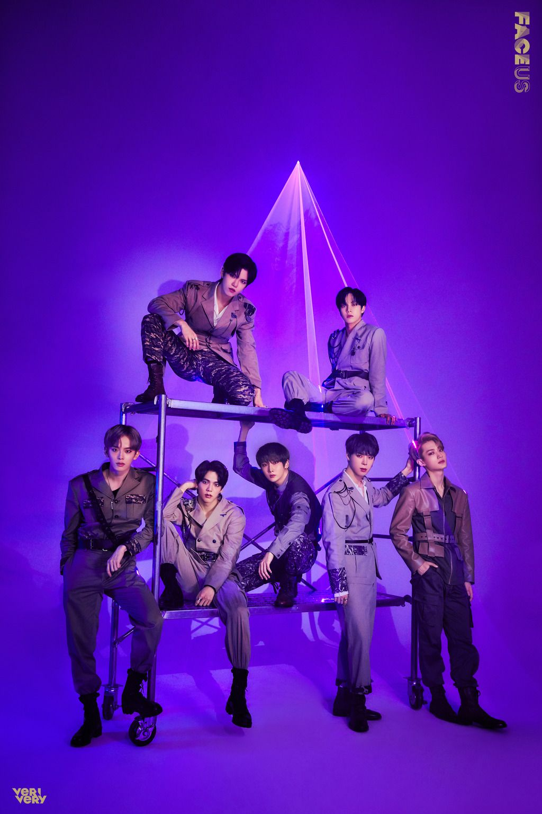

베리베리는 2019년 1월 9일 데뷔한 젤리피쉬엔터테인먼트 소속의 7인조 신인 보이그룹이다.
젤리피쉬엔터테인먼트가 보이그룹으로서는 7년만에 두 번째 아이돌 그룹으로서는 2년 7개월만에 세 번째로 런칭한 그룹
그룹명의 의미는 라틴어로 '진실'을 의미하는 'VERI'와, 영어로 '매우', '정말'을 의미하는 'VERY'가 합쳐져서 '정말 진짜'라는 뜻을 담고 있으며, 앞부분은 Various, Energetic, Real, Innovation의 이니셜로서 '다양하고 에너지가 넘치는 진정한 혁신을 보여주는 그룹'이라는 의미를 가지고 있다고 한다.
그룹명이 처음 공개되었을 때는 이게 정말 보이그룹 그룹명이 맞는가(...) 하는 반응이 많은 편이었으나, 멤버가 차례차례 공개되고 리얼리티와 공식 트위터를 통해 멤버들의 캐릭터가 알려진 뒤 지금 팬들은 나름 이미지에 맞게 지은 그룹이라 하여 납득하는 중. 멤버들 역시 처음 팀 이름을 받았을 때는 보이그룹 이름치고는 너무 예쁜 이름이지 않나(...) 하고 생각했지만 의미가 좋고 잘 어울린다는 얘기를 많이 들어 지금은 마음에 든다고 한다.